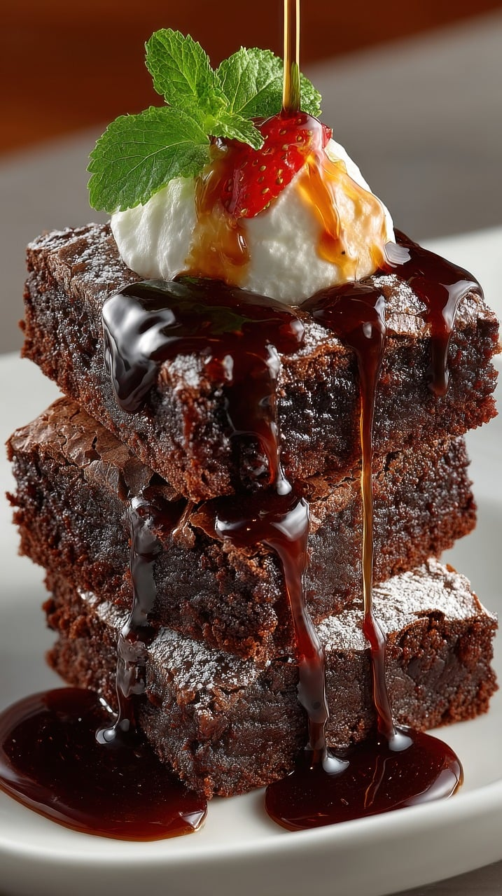

Home
Brownies

Description
A super easy brownie recipe. Made with cocoa powder and three types of chocolate, this homemade brownies are fudgy, gooey and super chocolaty!
Ingredients:
- 185g Unsalted butter
- 185g Dark chocolate
- 85g Plain flour
- 40g Cocoa powder
- 50g White chocolate
- 50g Milk chocolate
- 3 Large eggs
- 275g Golden caster sugar
Steps:
- Cut 185g unsalted butter into small cubes and tip into a medium bowl. Break 185g dark chocolate into small pieces and drop into the bowl
- Fill a small saucepan about a quarter full with hot water, then sit the bbowl on top so it rests on the rim of the pan, not touching the water. Put over a low heat until the butter and chocolate have melted, stirring occassionaly to mix them.
- Remove the bowl from the pan. Alternatively, cover the bowl loosely with cling film and put in the microwave for 2 minutes on High. Leave the melted mixture to cool to room temperture.
- While you wait for the chocolate to cool, position a shelf in the middle of the oven and turn the oven on to 180C/160C fan/gas 4.
- Using a shallow 20cm square tin, cut out a square of kitchen foil (or non-stick baking parchment) to line the base. Tip 85g plain flour and 40g cocoa powder into a sieve held over a medium bowl. Tap and shake the sieve so they run together and you get rid of any lumps.
- Chop 50g white chocolate and 50g milk chocolate into chunks on a board.
- Break 3 large eggs into a large bowl and tip in 275g golden caster sugar. With an electric mixer on maximum speed, whisk the eggs and sugar. They will look thick and creamy, like a milk shake. This can take 3-8 minutes depending on how powerful your mixer is. You'll know its ready when the mixture becomes really pale and about double its original volume.
- Pour the cooled chocolate mixture over the eggy mousse, then gently fold together with a rubber spatula. Mix until the two mixtures are one and the colour is a mottled dark brown.
- Hold the sieve over the bowl of eggy chocolate mixture and resift the cocoa and flour mixture.
- Gently fold it all together.
- Finally, stir in the white and milk chocolate chunks until they're dotted throughout.
- Pour the mixture into the prepared tins and put it in the oven for 25 mins. Bake until the top has a shiny, papery crust and the sides are just beginning to come away from the sides.
- Leave the whole thing in the tin until completely cold. Cut into quarters, then cut each quarter into four squares and finally into triangles.
- They'll keep in an airtight container for a good two weeks and in the freezer for up to a month.